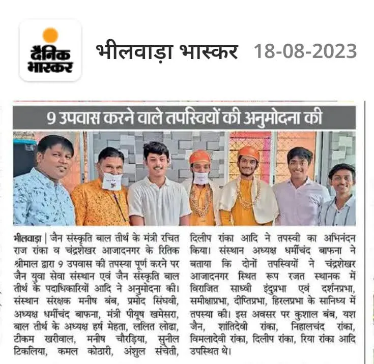
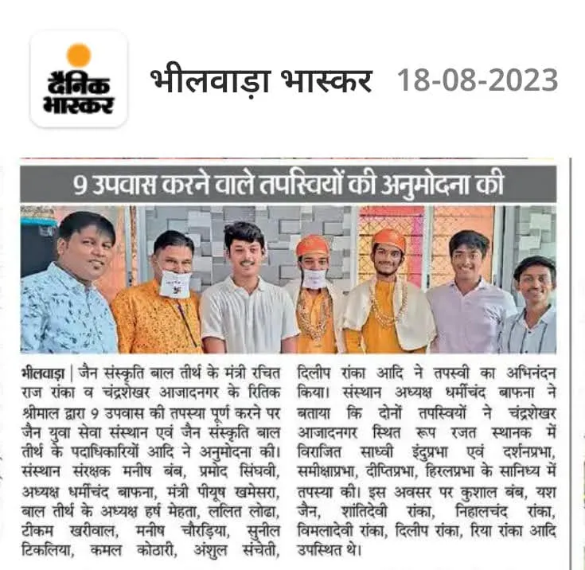
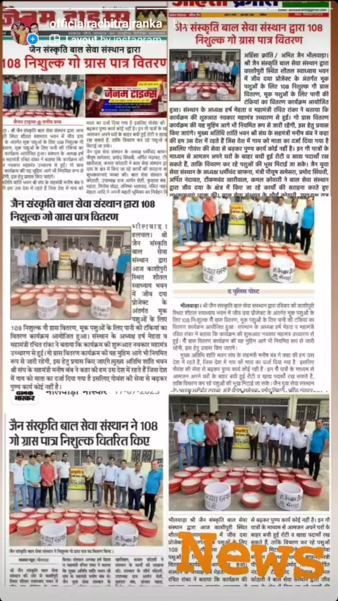
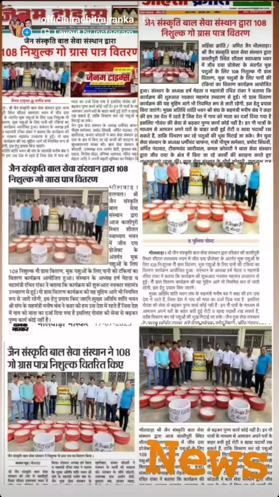

आगम ज्ञाता वाणी के जादूगर पं.पुज्य गुरूदेव डाॅ श्री समकित मुनि जी म.सा,
प्रेरणा कुशल श्री भवांत मुनि जी म.सा गायन कुशल श्री जयवंत मुनि जी म.सा कि पावन प्रेरणा
से
शांति भवन भीलवाड़ा मे वर्ष 2022 के चातुर्मास मे श्री अखिल भारतीय जैन संस्कृति सेवा केन्द्र
का
गठन किया
गया।
संगठन अच्छे कार्य कर सके इसके लिए हर्ष महता को अध्यक्ष एंव रचित राज रांका को मंत्री पद पर मनोनीत
किया
गया।
साल 2022 के चातुर्मास मे संगठन ने भिक्षु दया, पौधारोपण, निर्धन को राशन सामग्री वितरण कर विभिन्न
कार्यो
से सेवा के क्षेत्र मे अपनी पहचान भीलवाड़ा मे बनाई है।
 

 
